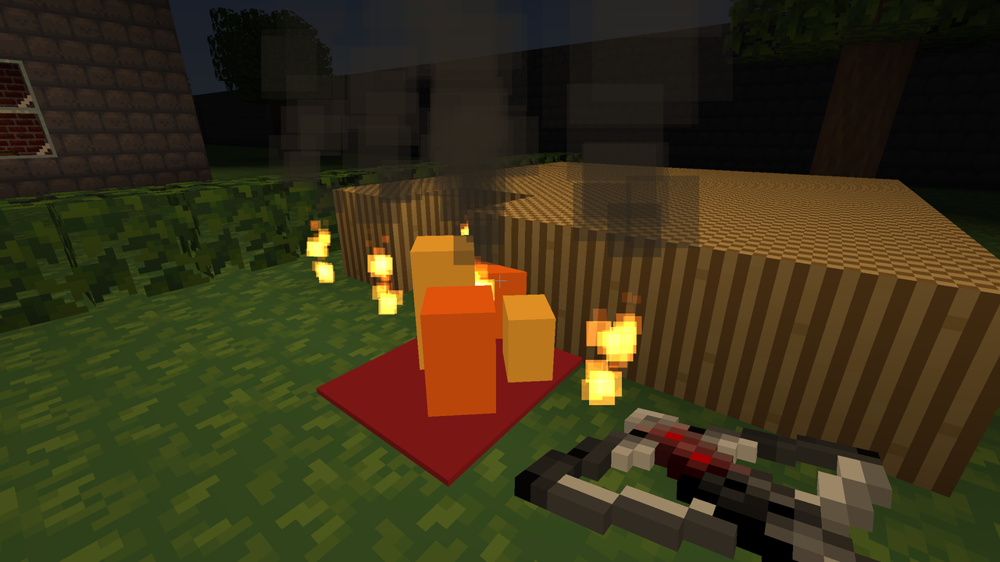

VoxelStealth
Completion ▰▰▱▱▱▱▱▱▱▱ 20% · the systems and one manor exist, nobody has robbed it yet
VoxelStealth is my attempt at Thief, with a bit of Hitman, in a Minecraft-style block world. You are a thief with a crossbow, a blackjack and a lockpick, dropped at the gate of Ashworth Manor at half past ten at night. Lord Ashworth dies tonight, his chalice leaves the cellar vault with you, and you want to be gone through the front gate before dawn makes the garden bright.
The rules are the Looking Glass rules: guards only have eyes and ears. A light gem tells you how visible you are from the sky light and the block light at your eye and feet. Sound travels the way Thief's did, through a room graph: every room is a box placed in the editor, openings between rooms become portals, doors are portals that close, and a footstep loses loudness with every portal it crosses. The guard's suspicion then builds continuously from what gets through, until it stops, looks, walks over, searches, or draws.
The second rule is that nothing is scripted. Every effect in the world is a stimulus, Dark Engine style: water, oil, fire, shock, pierce, bash, blast, flash and noise, and everything reacts only through its receptrons. A water arrow douses a torch, but so does a pierced barrel leaking onto it. A lamp knocked into a puddle electrocutes whoever stands in it, which the mission counts as an accident. A thrown torch lands on a rug, the rug catches, the fire spreads along the hedge. The manor is a chemistry set with guards in it.
Features
- Ashworth Manor: a hand-built two-floor manor with cellar, outer wall, garden and graveyard on a round island, built by a Go program from text files
- Objectives: kill the lord, steal the chalice from the vault, reach a loot quota, escape; a bonus for making the death look like an accident
- Light and sound stealth: light gem, focal and peripheral vision cones, Thief-style room and portal sound propagation with doors that muffle
- Guards with continuous suspicion and a state stack (patrol, suspicious, investigate, search, combat); civilians flee to report, and all of them talk, with 108 generated voice lines from six speakers
- Crossbow with broadhead, water, rope, noisemaker and flash arrows, blackjack, blade, lockpicks, explosives and TNT; bodies can be carried and hidden
- Stimulus system: fire that spreads through blocks, oil and water puddles, electricity in water, glass that breaks on pierce, bash or blast, walls that explosives actually remove
- Day comes while you play: missions set a start time and a time scale, and the sky light rises toward dawn
- Swimming, mantling, doors that swing like Minecraft's, Minecraft-style fire, an in-game voxel and gameplay editor on F5 with undo
- Headless simulation with 38 scenario tests, one per interaction the spec promises
Under the hood
The whole design is the comment at the top of sim/stim.go:
// Stim is a kind of stimulus, Dark Engine style. Everything that acts on
// the world emits stimuli with Stimulate, and objects, NPCs, blocks and
// puddles respond only through their receptrons, so whatever emits water,
// fire or noise has the same effect on everything it reaches, and effects
// chain (a pierced barrel's water douses the torch beside it).Hearing is a receptron too. A sound spreads through the room graph from where it was made, is measured at the guard's ear, and what remains above the guard's threshold becomes suspicion, weighted by what kind of sound it was (sim/npc.go):
f := s.Rooms.spread(snd.Pos, s.doorClosed)
rcv, _ := s.Rooms.heard(f, snd.Amount, n.eye())
if rcv <= thr {
return false
}
over := rcv - thr
switch snd.Kind {
case "footstep", "lockpick":
n.Suspicion += over * 0.9
case "door", "squeak", "loot", "unlock":
n.Suspicion += over * 1.2
case "noisemaker", "crash", "clatter", "arrow", "zap", "stab", "thud":
n.Suspicion += over * 2.5The player hears through the same graph: a sound in another room seems to come from the opening it arrives through. Missions are plain text files next to the voxel region, in the style of Terminal Assassin's mission format (missions/manor/mission.txt):
Title: Ashworth Manor
Time: 22:30
TimeScale: 8
LootQuota: 700
Ammo: broadhead=6 water=4 noisemaker=2 rope=2 explosive=1 tnt=5
Objective: accident
Target: ashworth
Text: Make Lord Ashworth's death look like an accidentThe engine is VoxelLib, my shared voxel library, which got a fresh A* navigation package for this game. Two rules in the repo's CLAUDE.md say what I care about: every model is glTF, and there are no exceptions to the stimulus system, never a special-case check at a hit site or in a tick.
Ideas & inspirations
Thief, obviously: the light gem, water arrows, the room-and-portal sound model and the awareness curves are described in docs/references.md as concepts taken from the leaked Dark Engine source and Tom Leonard's AI writings, with the rule that no code is ever copied or translated from it. Hitman supplies the accident kills and the challenge format, ported from my own Terminal Assassin, which also lends the AI state stack and the mission text files.
The spec is one vertical slice: one manor, about fifteen rooms, four guards, two servants, one target with a routine. No disguises, no social stealth, no minimap, no instinct mode. Planned but not built: skeletal NPC animation beyond the placeholder models, quicksave of the full state, and the end-of-mission statistics screen.
Where it started, where it ended
The first commit on 2026-10-12 was the spec, the license and two ledgers, ASSETS.md and THIRD_PARTY.md, that log the provenance and license of every texture, sound and dependency before any of them were used. The same day brought the headless simulation with its scenario tests, then the manor builder, the game client and the editor, then stimuli for water, fire, pierce, bash and blast, and by evening "stims everywhere": shock, glass, NPCs, noise, oil puddles. The next day added swimming, mantling, thrown torches, the graveyard, and doors that swing open instead of vanishing.
State of the repo
Two days old and in motion. It builds for macOS and Windows, and for the browser: VoxelLib got a WebGL2 backend for this, with the multi-draw calls emulated and the assets embedded in the WebAssembly binary. The scenario tests pass. Only three TODO comments, and the footstep samples are muted until there are nicer ones, though the guards still hear them.
Is it a real game?
Playable demo. The mission has a start, objectives and an exit, and the interactions the spec promises each work in a test and in the manor. What is missing is the proof: nobody has played Ashworth Manor through from the gate to the gate, there is no results screen at the end, and the guards are placeholder models that slide rather than walk.
Screenshots

Latest updates
- 2026-10-14 Browser build: WebGL2 backend in VoxelLib, assets embedded in the wasm
- 2026-10-13 Doors swing open like Minecraft doors instead of vanishing
- 2026-10-12 Graveyard beside the manor; mantling, slow puddles, thrown torches, light gem; manor on a round island in an ocean out to the fog
- 2026-10-12 Stims everywhere: shock, glass, NPCs, noise, oil puddles; water, fire, pierce, bash and blast through one Stimulate with receptrons
- 2026-10-12 Playable demo: Ashworth Manor builder, game client, editor; headless stealth simulation with scenario tests